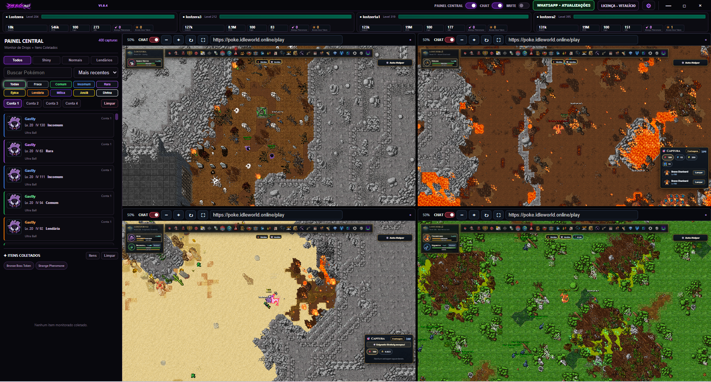
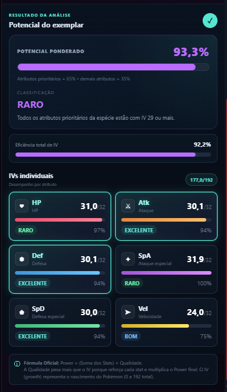
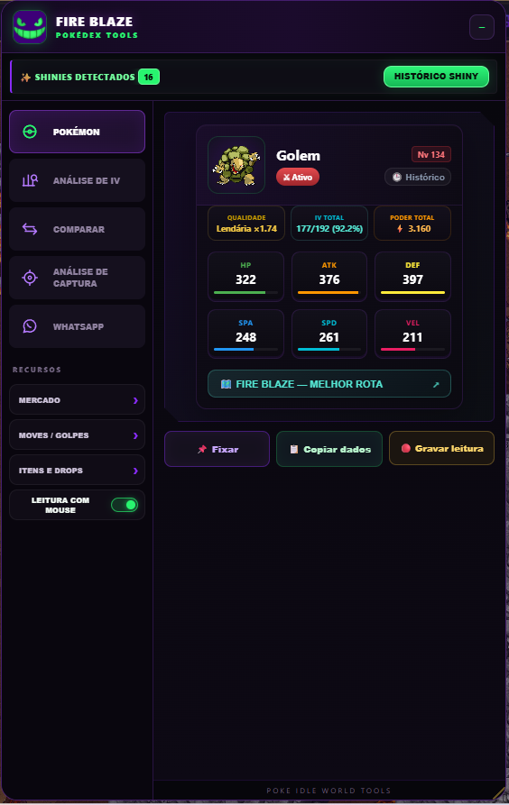

SEM FIRE BLAZE
- ✕ Troca constante de janelas
- ✕ Contas espalhadas pela tela
- ✕ Mais tempo procurando informação
- ✕ Recursos separados do jogo
Pare de ficar pulando entre janelas. O FIRE BLAZE Mult reúne até quatro contas em uma única central, com suas ferramentas e informações importantes sempre por perto.

Tela real do FIRE BLAZE Mult
A ideia é simples: deixar as quatro contas visíveis e reduzir a troca constante entre janelas.
Uma central para suas contas e ferramentas do FIRE BLAZE Mult.
Quatro sessões organizadas dentro da mesma interface.
Controle suas contas sem ficar pulando entre várias janelas.
Configure sua regra de IV diretamente no FIRE BLAZE.
Recursos de itens integrados ao ambiente do Mult.
Consulte informações sem precisar sair da sua jornada.
Baixe novas versões pela sua área do cliente.
A extensão FIRE BLAZE FIRE ANÁLISE reúne ferramentas para analisar Pokémon, acompanhar capturas e consultar informações importantes durante sua jornada.


Faça seu cadastro no site.
Conheça o FIRE BLAZE Mult antes de comprar.
Acesse o download pela sua área do cliente.
Continue com o acesso mensal ou permanente.
Comece gratuitamente e decida depois.
24 horas para conhecer o Mult.
30 dias de acesso completo.
Acesso permanente, sem mensalidade.
🔒 A licença fica vinculada à sua conta e ao dispositivo ativo.
A licença é para 1 computador ativo.
Sim. O teste gratuito libera 24 horas de acesso.
O download fica disponível na área do cliente conforme seu acesso.
Conheça o FIRE BLAZE Mult por 24 horas.
COMEÇAR AGORA